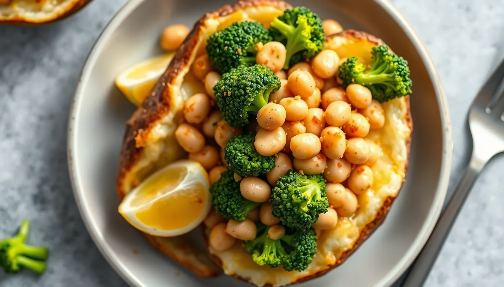

Baked Potato Broccoli Bean Bowls
Prep time: 15 minutes - Cook time: 35 minutes - Total time: 50 minutes
Estimated total cost: $12.80 - Estimated cost per serving: $3.20 - Serves: 4

Ingredients
- 4 medium russet potatoes — $3.00
- 1 large broccoli crown or 2 cups frozen broccoli — $1.80
- 1 can white beans or chickpeas, drained and rinsed — $1.00
- 1 tablespoon oil — $0.20
- 1 teaspoon garlic powder — $0.10
- 1/2 teaspoon paprika — $0.05
- 1/2 teaspoon salt — $0.05
- 1/4 teaspoon black pepper — $0.05
- 2 tablespoons nutritional yeast or simple sauce, optional — $0.60
- Optional: hot sauce or lemon juice — $0.20
Estimated ingredient total: $7.05 to $7.65
Displayed planning estimate: $12.80
Detailed Instructions
- Preheat the oven to 425°F.
- Scrub the potatoes, pierce them with a fork, and place them on a baking sheet.
- Bake for 35 to 45 minutes until tender.
- While the potatoes bake, chop the broccoli if using fresh.
- Steam or sauté the broccoli until tender-crisp.
- Warm the beans in a small pan with garlic powder, paprika, salt, and black pepper.
- Split the baked potatoes open once they are done.
- Fluff the inside lightly with a fork.
- Top each potato with broccoli and seasoned beans.
- Sprinkle with nutritional yeast or drizzle with a simple sauce if using.
- Finish with hot sauce or lemon juice if desired and serve hot.
Helpful Notes
- Sweet potatoes also work here.
- This is a very flexible meal for leftovers.
- Frozen broccoli keeps prep easy and cheap.
Price Note
Ingredient prices can vary by store, brand, and region, so these are planning estimates rather than exact totals.